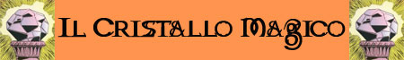

|
L'Artiglio Nero
Nonostante non possa definirsi uno stato nel senso letterale del
termine, l'Artiglio Nero rappresenta una comunità organizzata di
umanoidi, principalmente di razza Hobgoblin. In eterno conflitto
con i Duergar del Regno di Sardan, questi hobgoblin hanno
raggiunto un livello di organizzazione militare notevole.
Quest'organizzazione sostiene di avere il controllo su tutte le
Gole dell'Artiglio ed i suoi membri agiscono di conseguenza. Il
loro simbolo raffigurante un artiglio a tre punte
rappresenterebbe i tre poteri della comunità: Il potere militare
dei combattenti, il potere clericale legato al culto di Azatàr
ed il potere magico legato alla Necromanzia. Le basi operative
di questa organizzazione sono le seguenti:
Xoor:
Capitale dell'Artiglio Nero, questa cittadella fortificata è
abbarbicata sulle pendici dell'Artiglio Centrale, vetta più
imponente dei Monti dell'Artiglio.
Raak:
Piccola fortezza posizionata su un colle impervio e roccioso è
situata in una zona strategica centrale delle Gole
dell'Artiglio. Data la sua posizione centrale dalla stessa parte
la maggior parte delle pattuglie dell'organizzazione. Tale
rocca, inoltre, difende l'accesso alla valle di Xoor.
Arak:
La torre di Arak è un piccolo complesso di guardia situato nella
zona sud delle Gole dell'Artiglio sulle pendici dei Denti del
Drago. La sua posizione è strategica per il controllo del Passo
delle Pietre Grigie. |
Le Tribù di Orchi della Gola dell'Artiglio
Sulle impervie colline della Gola dell'Artiglio sono presenti tre grosse
tribù di orchi. Si tratta di comunità autonome l'una dalle altre ed
indipendenti. In passato l'Artiglio Nero provò ad assoggettare queste
tribù ma ciò creò l'occasione per un'unione temporanea delle stesse in
vista di una lotta con un nemico comune. Le forze congiunte degli orchi
supportate dai Duergar del Regno Sardan vinsero diverse battaglie contro
gli Hobgoblin dell'Artiglio Nero rendendoli vulnerabili ad un attacco
dei Duergar che giunsero ad assediare la rocca di Raak. Dopo tale
esperienza l'Artiglio Nero ha rinunciato ad assoggettare queste
belligeranti tribù preferendo utilizzare come mercenari i membri delle
stesse.
Tribù del Manto Grigio
(n.
3
sulla mappa): Tribù della zona centrale della Gole dell'Artiglio, prende
il suo nome dall'uso diffuso tra i guerrieri di coprirsi con mantelli di
pelliccia di lupo grigio. Si tratta della tribù numericamente più
cospicua dedita principalmente alla caccia. Non a caso in questa tribù
militano i migliori cacciatori orchi. Presso tale tribù si trova il più
importante tempio delle Forze della Natura dell'area. Data la vicinanza
ed il continuo contendersi di risorse e territorio, questa tribù non ha
un buon rapporto con l'Artiglio Nero e, nonostante, non vi sia una
guerra in atto, spesso si assiste a scaramucce e piccole battaglie tra
le pattuglie di queste diverse comunità.
Tribù della Punta Insanguinata
(n.
4
sulla mappa): Questa tribù del nord-ovest è numericamente la meno
consistente. Data la vicinanza alla roccaforte di Araxis, questa
comunità ha stretto accordi commerciali con i Duergar del Regno di
Sardan che pagano come mercenari alcuni dei suoi membri per impiegarli
nel controllo del territorio contro l'Artiglio Nero. Nonostante
simpatizzi storicamente con i Duergar con i quali commercia stabilmente,
questa tribù ha imparato ad ottenere vantaggi dalla sua posizione di
cuscinetto tra i due eterni belligeranti. Non è inusuale, infatti, che
gli orchi della tribù svolgano missioni a pagamento anche per l'Artiglio
Nero, ovviamente nel massimo della discrezione. Questa tribù è dedita al
culto di Azatàr. Il nome di questa tribù discende dall'uso di dipingere
con colore rosso le punte delle armi utilizzate come se si trattasse di
sangue versato da nemici appena uccisi.
Tribù del Teschio Nero
(n.
5
sulla mappa): Conosciuta come la più pericolosa e fuori controllo tribù
di orchi, i suoi membri sono violenti guerrieri dediti principalmente al
saccheggio ed alla razzia. Pattuglie di razziatori di questa tribù sono
stati riconosciuti responsabili di attacchi contro pattuglie Duergar,
dell'Artiglio Nero ed anche delle altre tribù di orchi. Temuti per la
loro violenza sono adoratori di Azatàr. A differenza dei membri della
tribù della Punta Insanguinata, questi orchi hanno migliori rapporti con
l'Artiglio Nero che spesso commissiona razzie o assolda come ufficiali
mercenari possenti orchi combattenti. Il nome di questa tribù discende
dalla consuetudine di indossare elmi con teschi umani od umanoidi
anneriti con il carbone.
|
|
Villaggio della
Gemma Splendente
(n. 10
sulla mappa)
Il Villaggio della Gemma Splendente è un antico villaggio di
Gnomi del Profondo (Svirfneblin). Questa fiera comunità gnomica
risiede sulle pendici del Monte Rosso (così chiamato per la
presenza di numerosi alberi dalle foglie rosse che si trovano
lungo il suo pendio). Il villaggio si trova solo parzialmente
lungo il pendio dove gli gnomi coltivano vigne ed alberi da
frutta. La maggior parte del villaggio, infatti, si trova nel
sottosuolo e si ramifica all'interno del monte ricco di
giacimenti di pietre preziose così care agli Svirfneblin. I
tunnel sotterranei scavati dagli gnomi scendono, inoltre, così
in profondità da raggiungere il Reame del Profondo (link)
ossia quell'enorme complesso di caverne sotterranee che
connettono quest'insediamento di gnomi direttamente alla
roccaforte di Aràxis del Reame Sardan. La posizione del
villaggio ha, inoltre, una certa rilevanza strategica dominando
il Guado delle Rocce Piatte
(n.
8
sulla mappa).

|
Il Fiume "Serpe Sinuosa"
(n.
6
sulla mappa): Questo fiume si insinua tra le rocce delle Gole
dell'Artiglio nelle quali ha finito per scavare un piccolo canion. Le
sponde del fiume si trovano, infatti dai 3 a 6 metri più in basso e vi
sono poche zone dove scendere comodamente fino all'acqua. Il fiume
sgorga da una sorgente situata sulla Zanna Est dei Monti del Drago. La
sua acqua è limpida e fredda e scorre velocemente verso valle. In
numerosi punti sono presenti rapide e la velocità dell'acqua rende
difficoltoso l'attraversamento. Data la velocità del suo flusso questo
fiume non ghiaccia nei mesi freddi. Il fiume misura intorno ai 300 metri
di larghezza e la sua profondità raggiunge nei punti più profondi i
dieci metri attestandosi nella norma intorno ai 3 o 4 metri. Non
esistono ponti su questo fiume. L'attraversamento è possibile in due
punti.
Il Guado della Lancia
(n.
9
sulla mappa): Questo guado è quello situato più a nord e sfrutta alcune
secche naturali dove l'acqua rallenta ed è profonda poco meno di mezzo
metro permettendo l'attraversamento di carri e cavalcature. Il guado è
famoso per una circostanza avvenuta nel corso della Guerra delle Tribù
Riunite. In tale occasione dopo una sanguinosa battaglia tra l'Artiglio
Nero ed i nani del Reame Sardan avvenuta nella Valle della Lancia
questi ultimi ripiegarono in ritirata e sarebbero stati annientati senza
l'intevento degli orchi della Tribù della Punta Insanguinata che con
valorosa resistenza fermarono l'avanzata delle truppe dell'Artiglio Nero
proprio al guado permettendo ai nani di ripiegare. Da allora il guado è
controllato dalla Tribù della Punta Insanguinata che gestisce il suo
passaggio, concedendo discrezionalmente i permessi di transito e
richiedendo un tributo normalmente pari ad 1 moneta d'oro per persona, 3
monete d'oro per cavalcatura od animale da soma (2 monete se sono traino
di un carro) e 5 monete d'oro per ogni carro.
Il Guado delle Rocce Piatte
(n.
8
sulla mappa): Questo guado è quello situato più a monte e sfrutta alcune
rocce piatte situate a distanza di massimo un metro l'una dall'altra.
L'acqua intorno alle rocce scorre violenta ed è profonda, per tale
motivo questo guado è attraversabile solo a piedi (non senza una certa
difficoltà dovuta alla non assoluta stabilità delle rocce ed alla loro
superficie bagnata) e non dalle cavalcature o dai carri. Questo guado è
sorvegliato dagli Gnomi del Profondo il cui insediamento, conosciuto
come Villaggio della Gemma Splendente, è ubicato nella immediate
vicinanze.
Il Passo delle Pietre Grigie (n.
7
sulla mappa):
La Miniera Umida (n.
2
sulla mappa):
DISTANZE DI
VIAGGIO NELLE COLLINE LIBERE DI FETCH
Distanza tra i principali luoghi di interesse
(nei mesi da Iron
a Iorio l'intero territorio risulta coperto da neve e ghiaccio)
Tribù del Manto Grigio
-
Miniere Umide
:
24
chilometri viaggio (32
km/viaggio)
Salita sul
colle della miniera: 0,65 km colline impervie e rocciose * 7 (*
9) = 4,5 km viaggio (5.5)
Percorso nella Valle del Lupo: 2,5
km colline dolce e suolo roccioso * 5 (*
7) = 12.5 km viaggio (17.5)
Percorso sul colle pietroso fino al villaggio: 1 km colline impervie e
rocciose * 7 (* 9)
= 7 km viaggio (9)
Torre di Picco Roccioso
-
Miniere Umide
:
41.2
chilometri viaggio (56.5
km/viaggio)
Salita sul
monte della Torre: 1,2 km montagna rocciosa * 9 (*
11) = 10,8 km viaggio (13.2)
Percorso sulle colline pietrose fino alla Valle del Lupo: 2,4 km colline
impervie e rocciose * 7 (*
9) = 16.8 km viaggio (21.6)
Percorso nella Valle del Lupo: 1,8
km colline dolce e suolo roccioso * 5 (*
7) = 9 km viaggio (16.2)
Salita sul colle della miniera: 0,65 km colline impervie e rocciose * 7
(* 9)
= 4,5 km viaggio (5.5)
|